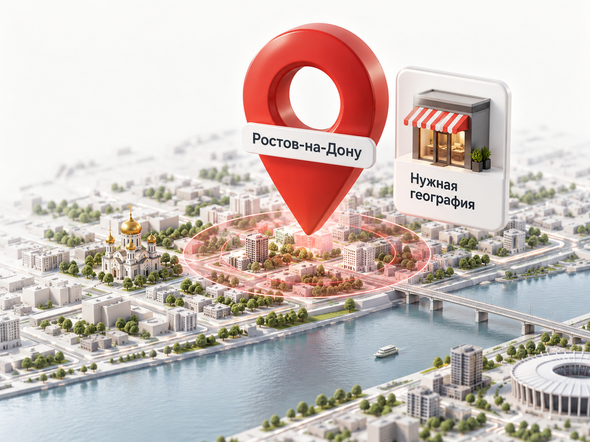
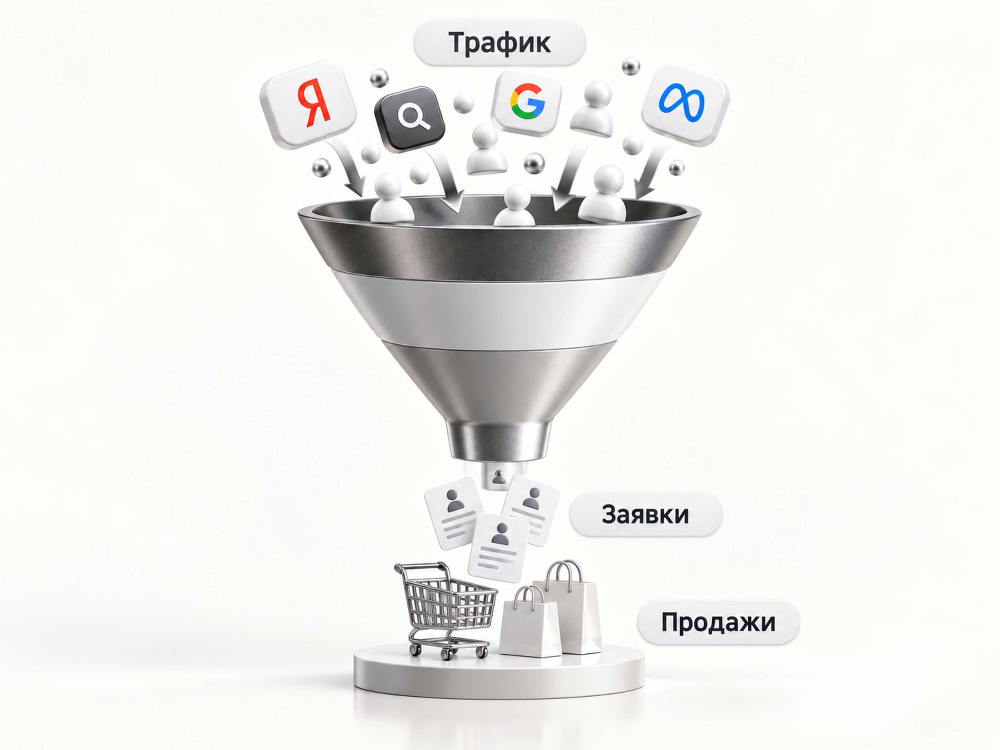

Блог о платном трафике
Директолог в Ростове-на-Дону
Меня зовут Максим Мирошников. Я директолог и специалист по платному трафику из Ростова-на-Дону. Более 10 лет занимаюсь интернет-рекламой, работаю с Яндекс Директ, аналитикой, сайтами и воронками. В портфолио собрано более 40 кейсов из B2B, недвижимости, услуг, образования и других направлений. Работаю напрямую как ИП, по договору и с закрывающими документами.
Если вы ищете директолога в Ростове или контекстолога для настройки Яндекс Директ, могу взять на себя как запуск рекламы с нуля, так и действующие кампании, где нужно найти причины высокой стоимости заявки, плохого качества обращений или слабого объема.
Для меня задача не заканчивается на технической настройке рекламного кабинета. Реклама должна приводить бизнесу нормальные обращения и быть связана с сайтом, аналитикой и продажами.
Что я делаю как специалист по Яндекс Директ
Перед запуском я сначала смотрю сам бизнес: что продается, кому, с каким предложением, какой сайт получает трафик и что происходит после заявки.
В работу могут входить:
- анализ ниши, спроса и конкурентов;
- аудит действующего Яндекс Директа;
- проверка сайта и посадочных страниц;
- настройка Яндекс Метрики и целей;
- разработка структуры рекламных кампаний;
- работа с поисковым спросом и автотаргетингом;
- настройка рекламы в РСЯ;
- Мастер кампаний и Единая перфоманс-кампания;
- подготовка объявлений и креативов;
- анализ поисковых запросов и площадок;
- оптимизация стратегий и бюджета;
- контроль стоимости и качества заявок;
- тестирование новых офферов, аудиторий и рекламных связок.
В актуальном Яндекс Директе Единая перфоманс-кампания позволяет работать с размещениями на Поиске, в Картах и Рекламной сети Яндекса. Мастер кампаний также может распределять показы между Поиском, РСЯ и Картами. Поэтому сегодня работа директолога заметно шире, чем простой сбор ключевых слов и создание объявлений.
Настройка Яндекс Директ для бизнеса в Ростове
Для локального бизнеса география имеет особое значение. Если компания работает только в Ростове-на-Дону и ближайших районах, покупать трафик со всей России нет смысла.
Сначала я определяю реальную зону работы бизнеса. Для одной компании это весь Ростов, для другой - Ростовская область, для третьей имеет смысл разделить город и область и оценивать их отдельно.
Дальше смотрю поисковый спрос. Человек может искать услугу с указанием города, района или вообще без географической приставки. Поэтому семантика строится не вокруг механического добавления слова «Ростов» ко всем запросам, а вокруг реального поведения аудитории.
Отдельно проверяется посадочная страница. Если пользователь ищет конкретную услугу, а реклама приводит его на перегруженную главную страницу с десятью направлениями, часть рекламного бюджета может теряться уже после клика.
Для локального проекта вся цепочка должна быть согласована:
спрос -> объявление -> подходящая страница -> заявка -> продажа.
Почему я смотрю не только на рекламный кабинет
Можно технически хорошо настроить Яндекс Директ и получить плохой результат.
Например, реклама приводит нужных людей, но на сайте непонятное предложение. Или заявки дешевые, но большинство из них нецелевые. Или обращений достаточно, но отдел продаж плохо их обрабатывает.
Поэтому при ведении проекта я смотрю дальше кликов и CTR.
Основные показатели для меня:
- количество обращений;
- стоимость заявки;
- качество лидов;
- конверсия сайта;
- конверсия следующих этапов воронки, если эти данные доступны;
- продажи и стоимость привлечения клиента.
Иногда проблему нужно решать внутри рекламы. Иногда менять посадочную страницу. Иногда выясняется, что текущий оффер просто проигрывает конкурентам.
Я предпочитаю говорить об этом сразу, а не оптимизировать рекламный кабинет ради красивого отчета.
Как проходит работа
1. Разбираю проект
Смотрю сайт, продукт, конкурентов, прошлую рекламу и аналитику. Если кампании уже работают, сначала проверяю, куда фактически уходят деньги: поисковые запросы, площадки, стратегии, аудитории, цели и качество полученных обращений.
2. Определяю рекламные гипотезы
Не существует обязательного набора кампаний, который одинаково хорошо работает для каждого бизнеса. Где-то основной объем дает Поиск. В других проектах эффективнее РСЯ. Иногда хорошо работает Мастер кампаний или смешанная структура. Решение принимается по спросу, экономике проекта и фактической статистике.
3. Настраиваю аналитику
До полноценной оптимизации нужно понимать, какое действие считать результатом.
- отправленная форма;
- звонок;
- заказ;
- запись;
- квалифицированная заявка;
- продажа или другой этап воронки.
Автоматической стратегии бесполезно передавать много легких целей, если они никак не связаны с деньгами бизнеса.
4. Запускаю или перестраиваю рекламу
Создаю кампании, объявления, аудитории и ограничения. Если в существующем аккаунте уже накоплена полезная статистика, стараюсь использовать ее, а не уничтожать работающую структуру только ради запуска «с чистого листа».
5. Веду и оптимизирую
После запуска начинается основная работа. Проверяю реальные поисковые запросы, площадки РСЯ, стоимость конверсий, распределение бюджета и качество обращений. Рабочие направления масштабируются, слабые корректируются или отключаются.
Что входит в услуги рекламы: настройка и ведение Яндекс Директ

Примеры работы с Яндекс Директ
В портфолио у меня более 40 кейсов. Это проекты с разной географией, бюджетами, спросом и длиной сделки.
В проекте агентства недвижимости с trade-in в 2025-2026 годах за первые месяцы получили 83 заявки по средней стоимости 1774 ₽, из которых 70 были квалифицированными. Здесь основную роль сыграли посадочная страница, РСЯ и обучение кампаний на данных воронки.
В проекте визового центра из ЮФО стоимость заявки после оптимизации снизилась с 1290 ₽ до 434 ₽ при практически том же рекламном бюджете. Одним из факторов была переработка географии и отсечение регионов, которые давали много некачественного трафика.
В B2B работаю и с нишами, где прямого спроса почти нет. Например, в проекте по выкупу акций миноритариев нужно было привлекать обращения по сложной услуге с высоким чеком и небольшим количеством прямых поисковых запросов. Основной объем в таком случае строился не только вокруг классического Поиска.
Директолог или контекстолог - есть ли разница
Если вы ищете «контекстолог Ростов», «директолог Ростов» или «специалист по Яндекс Директ в Ростове», в большинстве случаев речь идет об одном типе специалиста.
Термин «директолог» обычно сильнее привязан именно к Яндекс Директу. «Контекстолог» - более широкое название специалиста по контекстной рекламе.
На практике гораздо важнее не название профессии, а то, что конкретно человек делает с проектом: только создает кампании или работает со всей цепочкой от рекламы до качества заявок.
Обязательно ли директологу находиться в Ростове
Нет. Управление Яндекс Директом, Метрикой и аналитикой полностью выполняется удаленно.
Но если вам принципиально нужен специалист именно из Ростова-на-Дону, я нахожусь в Ростове и при этом работаю с проектами из разных регионов России. Местоположение клиента не ограничивает работу рекламных кампаний.
Для самой рекламы имеет значение не физическое местонахождение специалиста, а правильно выбранная география показов.

Сколько стоят мои услуги по ведению Яндекс Директ
Первый месяц работы - тестовый, его стоимость - 30 000 ₽. Рекламный бюджет оплачивается отдельно.
Дальнейшая стоимость ведения - от 30 000 ₽ в месяц. В зависимости от задач и масштаба проекта к фиксированной части может добавляться KPI или процент от рекламного бюджета. Конкретные условия согласовываем индивидуально до начала работы.
Разовая настройка может иметь смысл, если внутри компании есть человек, который затем будет регулярно анализировать и оптимизировать кампании. Если такого человека нет, я предпочитаю полноценное ведение, потому что после запуска реклама только начинает накапливать данные.
Кому подойдет работа со мной
Обычно я подключаюсь к проекту в одной из трех ситуаций.
Первая - Яндекс Директ еще не запускался и нужно построить рекламу с нуля.
Вторая - реклама уже работает, но стоимость заявок высокая, обращений мало или непонятно их качество.
Третья - реклама дает результат, но бизнес хочет масштабировать ее и проверить дополнительные связки.
Работаю с локальными услугами, B2B, недвижимостью, производством, образованием и другими направлениями, где можно нормально считать результат рекламы.
Как начать работу
Напишите мне и пришлите сайт или кратко опишите задачу. Если Яндекс Директ уже работает, лучше сразу дать возможность посмотреть рекламный кабинет и статистику.
Я сначала разбираюсь, что происходит сейчас, и только после этого предлагаю, что именно имеет смысл менять.
Работаю напрямую без аккаунт-менеджера между мной и заказчиком, как ИП, по договору и с ЭДО.
Частые вопросы
Можно ли настроить Яндекс Директ только на Ростов-на-Дону?
Да. Географию рекламы можно ограничить нужным регионом. Для локального бизнеса дополнительно имеет смысл анализировать эффективность отдельных территорий после накопления статистики.
Берете ли вы уже работающий Яндекс Директ?
Да. В этом случае работа начинается с аудита существующих кампаний и статистики. Если часть структуры уже приносит результат, нет необходимости полностью пересобирать аккаунт.
Настраиваете ли вы только Поиск?
Нет. В зависимости от проекта могут использоваться Поиск, РСЯ, Мастер кампаний, Единая перфоманс-кампания и другие доступные возможности Директа. Конкретный набор определяется задачей, а не шаблоном.
Работаете только с компаниями из Ростова?
Нет. Я нахожусь в Ростове-на-Дону, но веду рекламные проекты удаленно, поэтому могу работать с бизнесом из других городов.
Даете ли вы гарантию конкретной цены заявки?
Нет. До запуска невозможно честно гарантировать фиксированную стоимость обращения. На нее влияют спрос, конкуренты, предложение, сайт, рекламные настройки и качество работы с заявками. До старта можно построить прогноз, а реальные решения принимать уже по статистике.